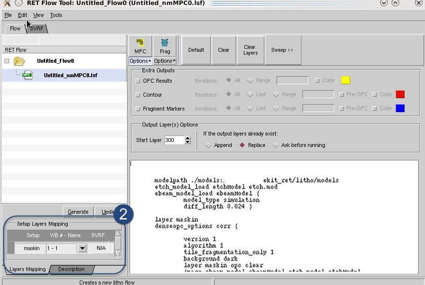

You must properly set up a Calibre nmMPC
run in order to produce corrected results for your mask layout.
Procedure
- In the
RET Flow Tool, select a session of type “nmMPC” or add a Calibre
nmMPC session. Use the option to import the Calibre
nmMPC file to the text pane of the window.
- In the Setup Layers Mapping
section, assign the layers in the layout to the layers defined in
the Calibre nmMPC session.
Figure 1. RET Flow Tool, Calibre
nmMPC Session
- Click Options under the MPC button to expose the Extra
Outputs pane.
- In the Extra Outputs pane,
set output options such as MPC iterations, contours, edge movement,
and fragment information for the MPC run.
OPC Results — Outputs
the resulting corrected edge movements for the specified iterations.
This is useful to track how edges move during correction. It generates
one consecutive output layer per iteration.
Contour —
Outputs a contour based on the EPE measurements for the specified
iterations. It generates one consecutive output layer per iteration.
Selecting Pre-OPC includes pre-MPC contour information in the output.
Fragment Markers —
Outputs fragmentation information such as final EPE, position, length,
type, feedback, displacement, target (goal) position, and the metric
used to measure the EPE. It generates one consecutive output layer
per iteration. This is required if you want to view fragmentation
information in the post-MPC analysis phase. Selecting Pre-OPC includes
pre-correction fragment information in the output.
Color —
Changes the color of the output type.
- In the
Output Layers Options section, set the initial output layer number.
The output layer numbers increase by one for each new output layer
per iteration produced.
- Click the MPC button to run MPC.
Results
Output layers are generated depending
on the settings in the Extra Outputs pane prior to the run. The
output can be analyzed using a number of different tools and operations.